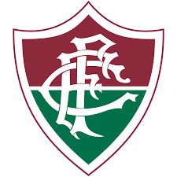

-

C.R. Vasco da Gama
O Club de Regatas Vasco da Gama, mais conhecido como Vasco da Gama ou simplesmente Vasco, cujo acrônimo é CRVG, é uma entidade sócio-poliesportiva brasileira com sede na cidade do Rio de Janeiro, fundada em 21 de agosto de 1898 por um grupo de remadores.
Saiba mais -

C.R. Flamengo
O Clube de Regatas do Flamengo é uma agremiação poliesportiva brasileira com sede na cidade do Rio de Janeiro, capital do estado homônimo. Fundado no bairro do Flamengo para disputas do esporte remo em 17 de novembro de 1895, tornou-se um dos clubes mais bem-sucedidos e populares do esporte brasileiro, especialmente pelo futebol.
Saiba mais -

Fluminense F.C.
Fluminense Football Club é um clube multidesportivo brasileiro sediado no bairro de Laranjeiras, localizado na Zona Sul da cidade do Rio de Janeiro, capital do estado homônimo. Fundado em 21 de julho de 1902, tem como principal atividade o futebol.
Saiba mais -

Botafogo R.F.
O Botafogo de Futebol e Regatas, ou simplesmente Botafogo, é uma agremiação poliesportiva brasileira, com sede no bairro homônimo ao clube, na cidade do Rio de Janeiro. Nascido da fusão do Club de Regatas Botafogo (fundado para o remo em 1894) com o Botafogo Football Club (formado para o futebol em 1904).
Saiba mais